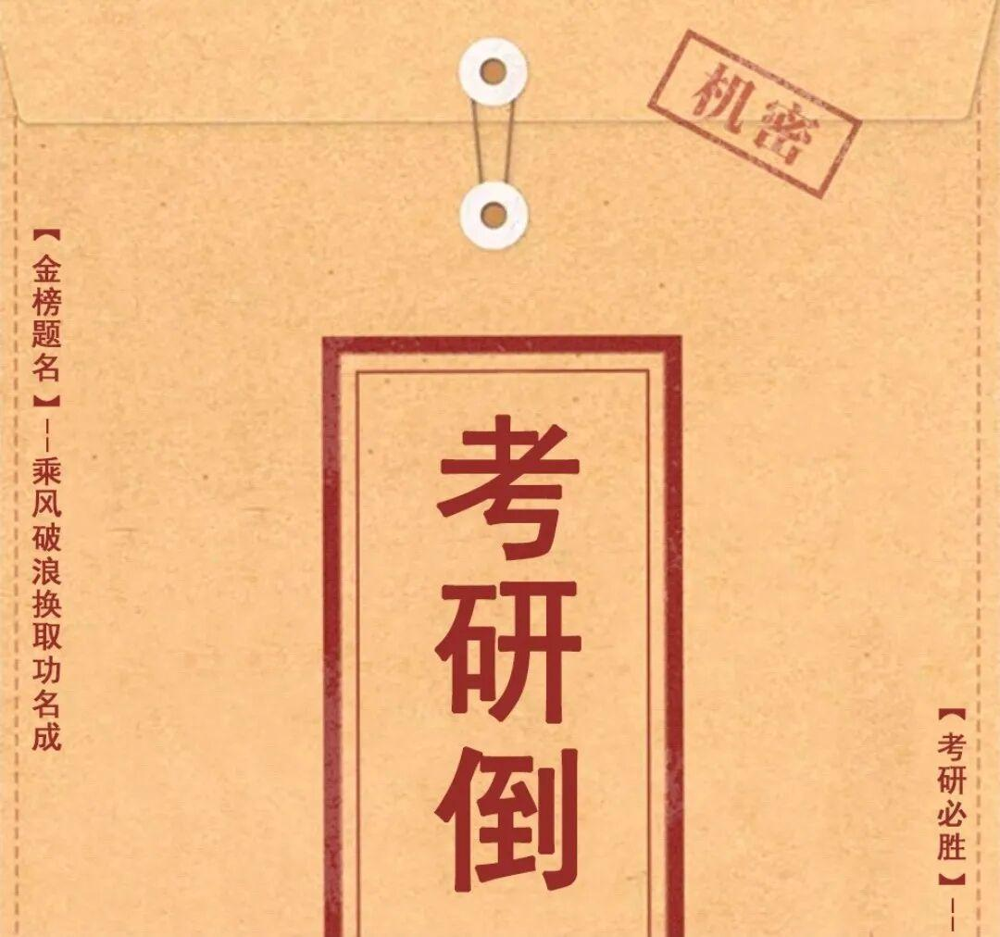
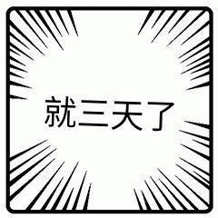
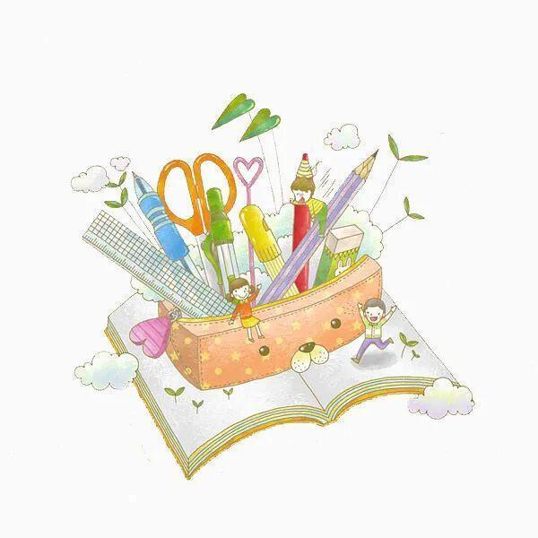
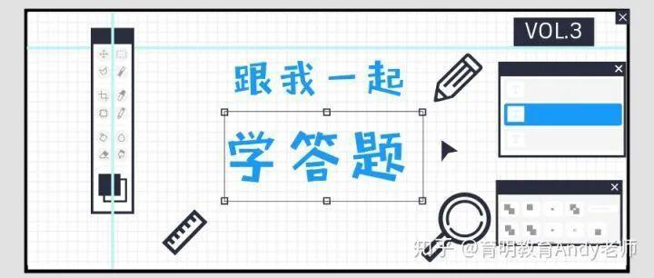

考研三天倒计时


考前准备
﹀
﹀
﹀


一、必带品
2B铅笔(最好带两枝，提前削好，以防万一可以把每支铅笔的两端都削好)。
橡皮(擦答题卡)。
小刀(用来裁开信封，试卷和答题卡都在信封里)。
中性笔(至少要带两只)
以上几件东西一定要带!一定要带!一定要带!(重要的事情说三遍)
这几件是考试必需品，中性笔、铅笔和橡皮擦等不带也许还能和别的同学去借，但是准考证、身份证不带的话，是无法进入考场参加考试的，希望大家一定要重视。
二、最好带上
1、最好带上转笔刀，使用自动铅笔的考生最好带上替换芯。
2、固体胶。用来封信封，有的考场也会提供胶水，但是最好自己带上。
3、水杯。注意水杯要求是透明的，不能有字迹。
4、透明文件袋。可以把需要带的东西都装进去，最好选带拉链的，防止文具掉出来。

首先说明一点，考研与其他考试不同之处在于，考卷的发放不是试卷，而是用信封装起来，信封的拆开，以及最后交卷的封装，都是考生自己完成，从信封发放后到上交前，监考官是没有权利碰你的试卷的。信封里面除了装着答题卡、试卷以外，应该还有一个封条，是你最后用来封这个信封的。
不要弄错进场时间，迟到十五分禁止入场!
仔细听监考老师的嘱咐，按照规定填写卷纸和答题卡，答题卡的学校名称和准考证号码的文字书写部分，不能用铅笔书写，要使用中性笔或者水性笔，主要是为了防止有人在封卷后窜改您的答题卡。之后准备答题。
▲注意事项：
1.一定要仔细的听监考老师的安排和嘱咐，不要因为看到卷纸，就忙于做题。因为这个1-2分钟的时间对于您的答题有什么大的帮助，但是会因为您的注意力不集中，而犯下难以弥补的过失。
2.一定要注意信封开口的方向，不要草率地剪开信封。
3.用小刀划信封的时候不要太用力，因为信封里面有一个纸舌头用来最后翻出来粘合信封的。动刀之前一定要看好!

卷面的整洁非常重要，注意尽量不要有勾画，在答题前可以拿出一分钟左右做个整体的规划，有必要的话就在草稿纸上或试卷上勾勒出主要的思路。整个答卷的题距大于段距，段距大于行距。题距段距行距，彼此之间是等距的。上下左右的留白要保持一致，字体的大小要适中且保持一致。还要注意每一行要水平，写直线。整个答卷应该是赏心悦目的艺术品。
注意审题和点题。答题要紧紧扣着题目的要求去写，不是你想写什么就写什么，你准备了什么就写什么，要明白，你的目的是解决题目的问题，在这个过程中，调动你所储备的知识，你的知识是为了解决这个题目的问题服务的。在答题的过程中，尽量用课本上的理论和书面语言，不能彻底抛开课本肆意的发挥。当然也不是不能发挥，实在是没有东西写了，再自由发挥。
注意答题的结构。一定要有开头、主体和结尾三个部分。开头一段要变相的夸这个题目的意义，主体部分可以从“背景、代表人物、代表著作、主要观点、理论意义、现实意义、评价、中外对比、古今对比、原则、特点、矛盾、关系”等方面去写，结尾部分可以升华、总结和展望。先挑最契合题目要求的部分回答，再进行适当的扩展，答题要全面、厚重而灵动。
一定要写满，往死里写，从开始写到结束。只要时间没有到，就不能停笔，哪怕写完了，也要进一步扩展。一般来讲，三个小时得写6000到7000字，A4纸的话，保证11页以上。
说一下时间，自己准备一个电子表或者手表，提前买，校对一下，看一看是否准确，不要走得过快或者过慢，几块钱的电子表很可能不靠谱。答题是3个小时，100分或者150分，100分的话，一分就要给1.8分钟，150分的话，一分就要分配1.2分钟。自己发下试卷之后，根据题目的分数，把每道题的时间分配好，写到题目的前面，答题的时候时不时看看时间，要进行时间的合理分配。
现在的阶段，不要想结果，没有意义，做好自己手头的事就可以了。复习了这么长时间，最后进行一下总结和提炼，查漏补缺，抓住重点，越是认真复习了越是觉得自己准备的还不够，这是一个正常的心态，千万不要放弃，做好目前最好的自己就是胜利。
排版 |王聚宝
文字 |王聚宝